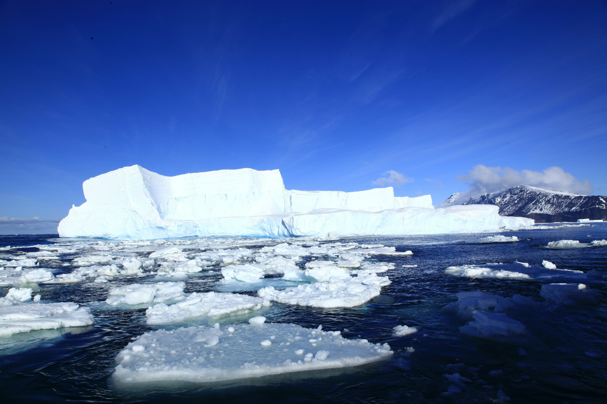
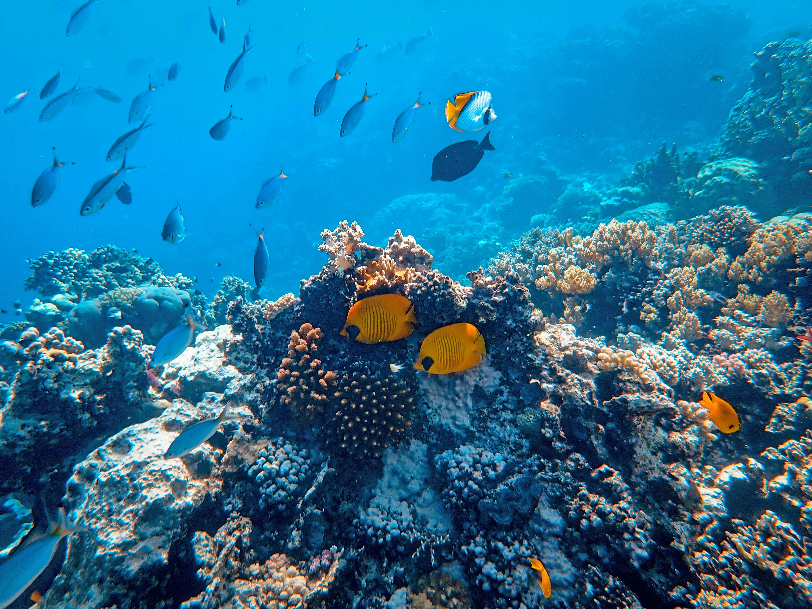

Water and Climate Change
The Water Cycle Connection
Climate change is inextricably linked to water. As the Earth's atmosphere warms, it can hold more moisture, which leads to more intense rainfall in some areas while causing faster evaporation in others.

Melting Glaciers and Rising Seas
Rising global temperatures are causing the world's glaciers and polar ice sheets to melt. This added water flows into the oceans, causing sea levels to rise at an accelerating rate.

Coastal communities are at high risk of increased flooding and permanent loss of land, forcing millions to reconsider where they live.
Extreme Weather Patterns
A warmer climate increases the frequency and severity of water-related disasters. We are seeing more frequent droughts that destroy crops and more violent storms that cause catastrophic flooding.

By managing our water resources more sustainably, we can build resilience against these extreme events and protect vulnerable populations.
Warming and Acidifying Oceans
The ocean acts as a heat sink, absorbing over 90% of the excess heat from greenhouse gas emissions. This warming disrupts marine life and affects global weather patterns.

Additionally, as oceans absorb CO2, they become more acidic, making it difficult for corals and shellfish to survive, which threatens the entire marine food chain.